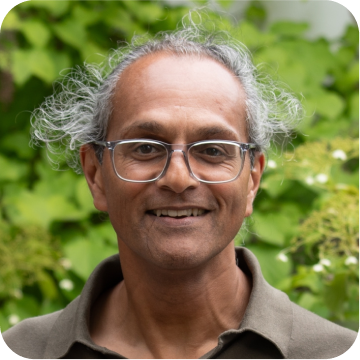
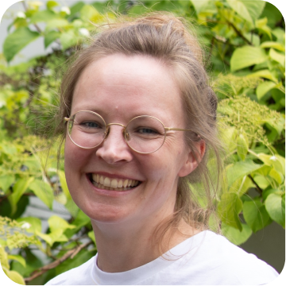

Über uns
Bildung gestalten im Zeitalter der Migration
Wir sind ein interdisziplinäres Team aus Wissenschaft, Bildung und Praxis, das sich mit den Herausforderungen und Möglichkeiten einer von Migration und Diversität geprägten Gesellschaft auseinandersetzt.
Unsere Arbeit verbindet rassismuskritische Analyse, Fragen von Zugehörigkeit und sozial-ökologischer Gerechtigkeit mit der Entwicklung von Bildungskonzepten, die auf Teilhabe, Reflexion und gesellschaftliche Transformation abzielen.

Prof. Dr. Paul Mecheril
Paul Mecheril ist Professor für Erziehungswissenschaft mit dem Schwerpunkt Migration an der Fakultät für Erziehungswissenschaft der Universität Bielefeld. Er promovierte in Psychologie, die Habilitation in Erziehungswissenschaft widmete sich dem Phänomen der (Mehrfach)Zugehörigkeiten in der Migrationsgesellschaft.
Er beschäftigt sich unter anderem mit rassismustheoretischer Gesellschaftsanalyse, ethischen Fragen von Bildung sowie migrationsgesellschaftlichen Zugehörigkeitsordnungen, Macht und Bildung.


Universität Bielefeld
Institut für Erziehungswissenschaft, AG 10 Migrationspädagogik und Rassismuskritik Noch nie waren weltweit so viele Menschen bereit, aufgrund von Kriegen, der Zerstörung von natürlichen Lebensbedingungen, Kriegen und anderen Bedrohungen gezwungen und aufgrund der technologisch bedingten Veränderung von Raum und Zeit in der Lage, ihren Arbeits- oder Lebensmittelpunkt, sei es vorübergehend oder auf Dauer, zu verändern: Wir leben in einem Zeitalter der Migration.
Die AG beschäftigt sich mit der Frage, welche Bildungskonzepte in diesem Zeitalter angemessen sind und geht davon aus, dass Bildung in gerade diesem Zeitalter darauf zielen sollte, Formen und Ausmaß der zerstörerischen Gewalt des Menschen gegen Menschen und gegen die Natur zu erkennen und zu der Minderung dieser Gewalt beizutragen.
Nadine Etzkorn
Nadine Etzkorn ist wissenschaftliche Mitarbeiterin am Arbeitsbereich Diversity Education des Instituts für Angewandte Erziehungswissenschaft der Universität Hildesheim. Sie arbeitet dort im Projekt „Zukünfte der Migration“, das sich mit Vorstellungen und Strategien zur Gestaltung von migrationsgesellschaftlichen Zukünften in politischen, medialen und sozialen Debatten, mit einem Fokus auf Bildungskontexte und die Migrationsforschung selbst auseinandersetzt.
In ihrer Promotion untersucht sie Differenz- und Rassismuserfahrungen internationaler Studierender sowie die (Un-)Möglichkeiten rassismuskritischer Bildungsprozesse. Ihre Arbeits- und Forschungsschwerpunkte umfassen Rassismus, Migration, Bildung, Nachhaltigkeit, Dekolonialität, Internationalisierung und soziale Bewegungen./p>

Universität Hildesheim
Institut für Angewandte Erziehungswissenschaft, Arbeitsbereich Diversity Education
Im Arbeitsbereich Diversity Education wird die Bedeutung von Diversität und Migration für die Gestaltung, Organisation und Transformation von Bildung erforscht. Dabei haben wir die schulische und außerschulische Bildung gleichermaßen im Blick.
Unsere Forschung zielt auf die Produktion, Vermittlung und Reflexion von Wissen über Migration, Mehrsprachigkeit, Diskriminierung, Diversität und Demokratie in Bildung, Zivilgesellschaft und Kultur Bildungsungleichheit und soziale Teilhabe in der Migrationsgesellschaft die Gestaltung von Rahmenbedingungen und Strukturen gesellschaftlicher und politischer Teilhabe im Kontext migrationsbedingter Diversität. Erkenntnistransfer in Politik, Zivilgesellschaft, Bildungspraxis und Medien sind für uns eine Selbstverständlichkeit.
Dr. Lara Esther Bartels
Lara Bartels ist Eine-Welt-Regionalpromotorin für Bielefeld und die Kreise Gütersloh, Herford und Paderborn beim Welthaus Bielefeld e.V. und fungiert dort auch als Fachbereichsleitung Inland - Bildung. Als Regionalpromotorin unterstützt sie Engagement von Schulen, Initiativen, Vereinen und Kommunen im Bereich Globales Lernen und Bildung für nachhaltige Entwicklung (BNE).
Dies geschieht u.a. durch Beratungen, Vernetzung, Entwicklung und Durchführung von Workshops und Betreuung der außerschulischen Lernorte „Global Goals Radweg “ und “Erlebnisraum Globale Nachhaltigkeit”. Zuvor hat sie als wissenschaftliche Mitarbeiterin zu (Re-)Produktion von Ungleichheiten im Zugang zu Land und Wasser in West- und Ostafrika geforscht. Sie interessiert sich insbesondere für die Schnittstelle zwischen (Zivil-)Gesellschaft und Wissenschaft im Themenbereich sozial-ökologische Gerechtigkeit


Welthaus Bielefeld
Welthaus Bielefeld e.V. ist ein entwicklungspolitischer Verein, er wurde bereits 1980 gegründet und ist in ganz Deutschland vernetzt. Feste und ehrenamtliche Mitarbeiter*innen arbeiten hier zusammen für globale sozial-ökologische Gerechtigkeit in einer zukunftsfähigen Welt. Sie engagieren sich in der Bildungs- und Öffentlichkeitsarbeit, in internationaler Kulturarbeit, in Entwicklungszusammenarbeit mit Projektpartner*innen in Afrika und Lateinamerika, im Freiwilligenprogramm weltwärts, im Fairen Handel und in der Städtepartnerschaft der Stadt Bielefeld mit Estelí, Nicaragua.
Das Welthaus Bielefeld ist bundesweit anerkannt für seine Expertise in Globalem Lernen/Bildung für Nachhaltige Entwicklung (BNE). Es engagiert sich in lokalen, landes- und bundesweiten Netzwerken wie etwa dem BNE-Netzwerk Bielefeld. Mit selbst entwickelten didaktischen Materialien, Workshops, einer Mediothek, vielen öffentlichen Veranstaltungen und den außerschulischen Lernorten Global Goals Radweg und Erlebnisraum Globale Nachhaltigkeit ermöglicht das Welthaus Bielefeld Globales Lernen.